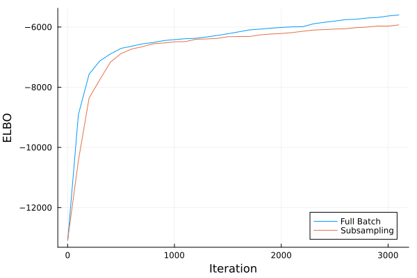
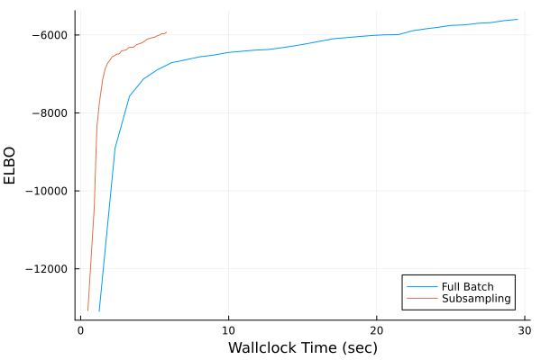
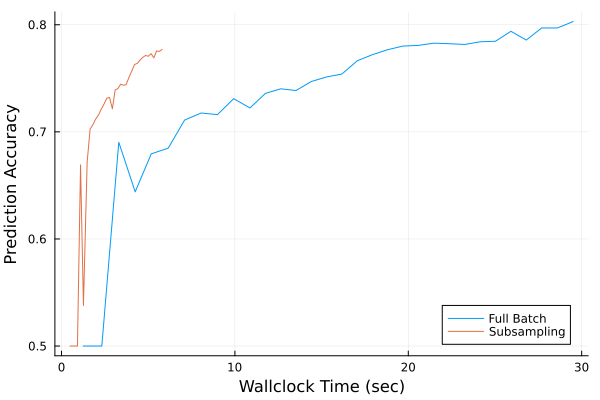

Scaling to Large Datasets with Subsampling
In this tutorial, we will show how to use AdvancedVI on problems with large datasets. Variational inference (VI) has a long and successful history[HBWP2013][TL2014][HBB2010] in large scale inference using (minibatch) subsampling. In this tutorial, we will see how to perform subsampling with KLMinRepGradProxDescent, which was originally described in the paper by Titsias and Lázaro-Gredilla[TL2014]; Kucukelbir et al[KTRGB2017].
Setting Up Subsampling
We will consider the same hierarchical logistic regression example used in the Basic Example.
using LogDensityProblems: LogDensityProblems
using Distributions
using FillArrays
struct LogReg{XType,YType}
X::XType
y::YType
n_data::Int
end
function LogDensityProblems.logdensity(model::LogReg, θ)
(; X, y, n_data) = model
n, d = size(X)
β, σ = θ[1:size(X, 2)], θ[end]
logprior_β = logpdf(MvNormal(Zeros(d), σ), β)
logprior_σ = logpdf(LogNormal(0, 3), σ)
logit = X*β
loglike_y = mapreduce((li, yi) -> logpdf(BernoulliLogit(li), yi), +, logit, y)
return n_data/n*loglike_y + logprior_β + logprior_σ
end
function LogDensityProblems.dimension(model::LogReg)
return size(model.X, 2) + 1
end
function LogDensityProblems.capabilities(::Type{<:LogReg})
return LogDensityProblems.LogDensityOrder{0}()
end
nothingNotice that, to use subsampling, we need be able to rescale the likelihood strength. That is, for the gradient of the log-density with a batch of data points of size n to be an unbiased estimate of the gradient using the full dataset of size n_data, we need to scale the likelihood by n_data/n. This part is critical to ensure that the algorithm correctly approximates the posterior with the full dataset.
As usual, we will set up a bijector:
using Bijectors: Bijectors
function Bijectors.bijector(model::LogReg)
d = size(model.X, 2)
return Bijectors.Stacked(
Bijectors.bijector.([MvNormal(Zeros(d), 1.0), LogNormal(0, 3)]),
[1:d, (d + 1):(d + 1)],
)
end
nothingFor the dataset, we will use one that is larger than that used in the Basic Example. This is to properly assess the advantage of subsampling. In particular, we will utilize the "Phishing" dataset[Tan2018], which consists of 10000 data points, each with 48 features. The goal is to predict whether the features of a specific website indicate whether it is a phishing website or a legitimate one. The dataset id on the OpenML repository is 46722.
using OpenML: OpenML
using DataFrames: DataFrames
data = Array(DataFrames.DataFrame(OpenML.load(46722)))
X = Matrix{Float64}(data[:, 2:end])
y = Vector{Bool}(data[:, end])
nothingThe features start from the seoncd column, while the last column are the class labels.
Let's also apply some basic pre-processing.
using Statistics
X = (X .- mean(X; dims=2)) ./ std(X; dims=2)
X = hcat(X, ones(size(X, 1)))
nothingLet's now istantiate the model and set up automatic differentiation using LogDensityProblemsAD.
using ADTypes, ReverseDiff
using LogDensityProblemsAD
model = LogReg(X, y, size(X, 1))
model_ad = LogDensityProblemsAD.ADgradient(ADTypes.AutoReverseDiff(), model)
nothingTo enable subsampling, LogReg has to implement the method AdvancedVI.subsample. For our model, this is fairly simple: We only need to select the rows of X and the elements of y corresponding to the batch of data points. As subtle point here is that we wrapped model with LogDensityProblemsAD.ADgradient into model_ad. Therefore, AdvancedVI sees model_ad and not model. This means we have to specialize AdvancedVI.subsample to typeof(model_ad) and not LogReg.
using Accessors
using AdvancedVI
function AdvancedVI.subsample(model::typeof(model_ad), idx)
(; X, y, n_data) = parent(model)
model′ = @set model.ℓ.X = X[idx, :]
model′′ = @set model′.ℓ.y = y[idx]
return model′′
end
nothingThe default implementation of AdvancedVI.subsample is AdvancedVI.subsample(model, idx) = model. Therefore, if the specialization of AdvancedVI.subsample is not set up properly, AdvancedVI will silently use full-batch gradients instead of subsampling. It is thus useful to check whether the right specialization of AdvancedVI.subsample is being called.
Scalable Inference via AdvancedVI
In this example, we will compare the convergence speed of KLMinRepGradProxDescent with and without subsampling. Subsampling can be turned on by supplying a subsampling strategy. Here, we will use ReshufflingBatchSubsampling, which implements random reshuffling. We will us a batch size of 32, which results in 313 = length(subsampling) = ceil(Int, size(X,2)/32) steps per epoch.
dataset = 1:size(model.X, 1)
batchsize = 32
subsampling = ReshufflingBatchSubsampling(dataset, batchsize)
alg_sub = KLMinRepGradProxDescent(ADTypes.AutoReverseDiff(; compile=true); subsampling)
nothingRecall that each epoch is 313 steps. When using ReshufflingBatchSubsampling, it is best to choose the number of iterations to be a multiple of the number of steps length(subsampling) in an epoch. This is due to a peculiar property of ReshufflingBatchSubsampling: the objective value tends to increase during an epoch, and come down nearing the end. (Theoretically, this is due to conditionally biased nature of random reshuffling[MKR2020].) Therefore, the objective value is minimized exactly after the last step of each epoch.
num_epochs = 10
max_iter = num_epochs * length(subsampling)
nothingIf we don't supply a subsampling strategy to KLMinRepGradProxDescent, subsampling will not be used.
alg_full = KLMinRepGradProxDescent(ADTypes.AutoReverseDiff(; compile=true))
nothingThe variational family will be set up as follows:
using LinearAlgebra
d = LogDensityProblems.dimension(model_ad)
q = FullRankGaussian(zeros(d), LowerTriangular(Matrix{Float64}(0.37*I, d, d)))
b = Bijectors.bijector(model)
binv = Bijectors.inverse(b)
q_transformed = Bijectors.TransformedDistribution(q, binv)
nothingIt now remains to run VI. For comparison, we will record both the ELBO (with a large number of Monte Carlo samples) and the prediction accuracy.
using StatsFuns: StatsFuns
logging_interval = 100
time_begin = nothing
"""
logistic_prediction(X, μ_β, Σ_β)
Approximate the posterior predictive probability for a logistic link function using Mackay's approximation (Bishop p. 220).
"""
function logistic_prediction(X, μ_β, Σ_β)
xtΣx = sum((model.X*Σ_β) .* model.X; dims=2)[:, 1]
κ = @. 1/sqrt(1 + π/8*xtΣx)
return StatsFuns.logistic.(κ .* X*μ_β)
end
function callback(; iteration, averaged_params, restructure, kwargs...)
if mod(iteration, logging_interval) == 1
# Use the averaged parameters (the eventual output of the algorithm)
q_avg = restructure(averaged_params)
# Compute predictions using
μ_β = mean(q_avg.dist)[1:(end - 1)] # posterior mean of β
Σ_β = cov(q_avg.dist)[1:(end - 1), end - 1] # marginal posterior covariance of β
y_pred = logistic_prediction(X, μ_β, Σ_β) .> 0.5
# Prediction accuracy
acc = mean(y_pred .== model.y)
# Higher fidelity estimate of the ELBO on the averaged parameters
n_samples = 256
obj = AdvancedVI.RepGradELBO(n_samples; entropy=MonteCarloEntropy())
elbo_callback = estimate_objective(obj, q_avg, model)
(elbo_callback=elbo_callback, accuracy=acc, time_elapsed=time() - time_begin)
else
nothing
end
end
time_begin = time()
_, info_full, _ = AdvancedVI.optimize(
alg_full, max_iter, model_ad, q_transformed; show_progress=false, callback
);
time_begin = time()
_, info_sub, _ = AdvancedVI.optimize(
alg_sub, max_iter, model_ad, q_transformed; show_progress=false, callback
);
nothingLet's visualize the evolution of the ELBO.
using Plots
t = 1:logging_interval:max_iter
plot(
[i.iteration for i in info_full[t]],
[i.elbo_callback for i in info_full[t]];
xlabel="Iteration",
ylabel="ELBO",
label="Full Batch",
)
plot!(
[i.iteration for i in info_sub[t]],
[i.elbo_callback for i in info_sub[t]];
label="Subsampling",
)
savefig("subsampling_example_iteration_elbo.svg")
nothing
According to this plot, it might seem like subsampling has no benefit (if not detrimental). This is, however, because we are plotting against the number of iterations. Subsampling generally converges slower (asymptotically) in terms of iterations. But in return, it reduces the time spent at each iteration. Therefore, we need to plot against the elapsed time:
plot(
[i.time_elapsed for i in info_full[t]],
[i.elbo_callback for i in info_full[t]];
xlabel="Wallclock Time (sec)",
ylabel="ELBO",
label="Full Batch",
)
plot!(
[i.time_elapsed for i in info_sub[t]],
[i.elbo_callback for i in info_sub[t]];
label="Subsampling",
)
savefig("subsampling_example_time_elbo.svg")
nothing
We can now see the dramatic effect of subsampling. The picture is similar if we visualize the prediction accuracy over time.
plot(
[i.time_elapsed for i in info_full[t]],
[i.accuracy for i in info_full[t]];
xlabel="Wallclock Time (sec)",
ylabel="Prediction Accuracy",
label="Full Batch",
)
plot!(
[i.time_elapsed for i in info_sub[t]],
[i.accuracy for i in info_sub[t]];
label="Subsampling",
)
savefig("subsampling_example_time_accuracy.svg")
nothing
But remember that subsampling will always be asymptotically slower than no subsampling. That is, as the number of iterations increase, there will be a point where no subsampling will overtake subsampling even in terms of wallclock time. Therefore, subsampling is most beneficial when a crude solution to the VI problem suffices.
- HBB2010Hoffman, M., Bach, F., & Blei, D. (2010). Online learning for latent Dirichlet allocation. In Advances in Neural Information Processing Systems, 23.
- HBWP2013Hoffman, M. D., Blei, D. M., Wang, C., & Paisley, J. (2013). Stochastic variational inference. Journal of Machine Learning Research, 14(1), 1303-1347.
- TL2014Titsias, M., & Lázaro-Gredilla, M. (2014, June). Doubly stochastic variational Bayes for non-conjugate inference. In Proceedings of the International Conference on Machine Learning (pp. 1971-1979). PMLR.
- KTRGB2017Kucukelbir, A., Tran, D., Ranganath, R., Gelman, A., & Blei, D. M. (2017). Automatic differentiation variational inference. Journal of Machine Learning Research, 18(14), 1-45.
- Tan2018Tan, Choon Lin (2018), "Phishing Dataset for Machine Learning: Feature Evaluation", Mendeley Data, V1, doi: 10.17632/h3cgnj8hft.1]
- MKR2020Mishchenko, K., Khaled, A., & Richtárik, P. (2020). Random reshuffling: Simple analysis with vast improvements. Advances in Neural Information Processing Systems, 33, 17309-17320.